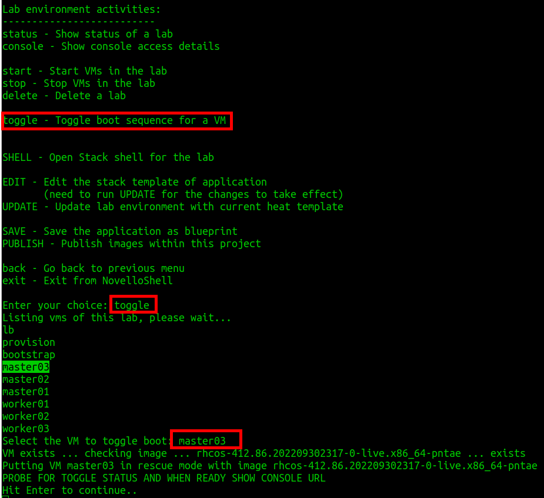
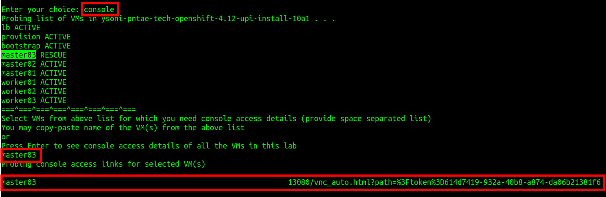
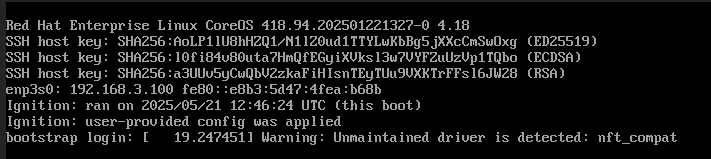

Lab (2 of 2)
Baremetal UPI Installation
-
Create cluster installation directory as
clusterconfigunderlab-userhome directory onprovisionmachine. -
Run installer to create manifests.
-
Run installer to create ignition configs.
-
Copy all ign files to public html directory.
-
Rescue the nodes with uploaded image. For this change the boot sequence by selecting the
toggleoption as shown in screenshot below. Select the node you want to toggle: -
Once you have toggled the lab, type
consoleoption and type the name of the node you want get console access of as shown in screenshot below:To boot the VM using HDD again, you will need to toggle the boot sequence again using the same toggleoption. -
Information on
cmdscript:Use the httpd server from provision virtual machine to host the cmdscript. You will need to mention the ignition-hash in the script.Sample Output[cloud-user@provision ~]$ cat /tmp/cmd.j2 sudo nmcli con mod "Wired connection 1" ipv4.dns "192.168.3.254, 8.8.8.8" sudo nmcli con mod "Wired connection 1" ipv4.ignore-auto-dns yes sudo systemctl restart NetworkManager sudo sleep 10 sudo cat /etc/resolv.conf curl -v http://quay.io/v2 sudo coreos-installer install --ignition-url=http://192.168.3.254/~lab-user/bootstrap.ign --ignition-hash=sha512-{{bootstrap_hash.stdout}} /dev/vdb --copy-network sudo coreos-installer install --ignition-url=http://192.168.3.254/~lab-user/master.ign --ignition-hash=sha512-{{master_hash.stdout}} /dev/vdb --copy-network sudo coreos-installer install --ignition-url=http://192.168.3.254/~lab-user/worker.ign --ignition-hash=sha512-{{worker_hash.stdout}} /dev/vdb --copy-network-
You will need to modify DNS setting on each node as it will automatically take the DNS server of underlying infrastructure(PSI).
-
All network connections of nodes are named with
Wired connection 1. -
You will notice that modifying these wired connections to connect to our DNS servers.
-
Make sure you are able to connect to
quay.io. -
To make this network setting persistent after reboot and successful installation of RHCOS on the nodes, you need to use
--copy-networkoption incoreos-installercommand.
-
-
Take the console of the each node, download and run the
cmdscript:Sample Output$ sh cmdOpenstack console doesn’t have clipboard. You can save your time of typing the command in console by modifying and downloading the CMD script using curl.
For some unidentified reason, nodes are booting with PSI DNS servers.
You will need to again update /etc/resolv.conf file.
|
-
Update DNS server (
192.168.3.254and8.8.8.8) entries in/etc/resolv.conffile. Ensure after rebooting nodes (bootstrap, masters and workers), correct DNS servers are reflected.Sample Output// ssh from provision to nodes $ sudo sed -i "/\[main\]/a dns=none" /etc/NetworkManager/NetworkManager.conf $ sudo cat /etc/NetworkManager/NetworkManager.conf | grep -i main -A2 $ sudo systemctl restart NetworkManager $ sudo vi /etc/resolv.conf nameserver 192.168.3.254 nameserver 8.8.8.8 $ sudo reboot -
After successful installation of rhcos on each node (verify from console output), unrescue the nodes using
toggleoption. -
Take the console of each node and verify it is booted with rhcos (you should see the login prompt), in case if it is taking time or noticing internal server error then try to click on
Send CtrlAltDelbutton to reboot the server. -
Run the
openshift-installcommand to start the bootstrap process.Sample Output[lab-user@provision ~]$ openshift-install --dir clusterconfig wait-for bootstrap-complete --log-level=debug -
Update haproxy settings on load balancer (
lb) after bootstrap process is completed. Remove thebootstrapmachine entry from/etc/haproxy/haproxy.cfgfile and restart thehaproxyservice. -
On
provisionvirtual machine, export thekubeconfigand approve allcsrcertificates.Sample Output[lab-user@provision ~]$ export KUBECONFIG=clusterconfig/auth/kubeconfig [lab-user@provision ~]$ oc get csr -o go-template='{{range .items}}{{if not .status}}{{.metadata.name}}{{"\n"}}{{end}}{{end}}' | xargs oc adm certificate approve -
Ensure all nodes are in ready state and all cluster operators are available.
-
Now, complete the installation by running the
openshift-installcommand.Sample Output[lab-user@provision ~]$ openshift-install --dir clusterconfig/ wait-for install-complete -
After the installation completes, you can confirm that the cluster version has updated to the new version.
Sample Output[lab-user@provision ~]$ oc get clusterversion NAME VERSION AVAILABLE PROGRESSING SINCE STATUS version 4.18.11 True False 2m31s Cluster version is 4.18.11